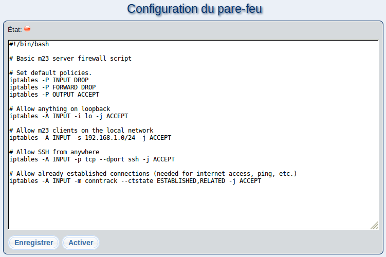

Ce dialogue vous permet de créer et d'éditer les règles du firewall de votre serveur m23. Lorsque vous accédez à cette page pour la première fois, un ensemble de règles simples du firewall seront créées, elles bloqueront tout accès au serveur m23 depuis l'extérieur de votre réseau (excepté pour SSH).
Si votre situation requière un ensemble de règles différent, vous pouvez en créer de nouvelles à l'aide d'iptables puis coller ces dernières dans l'éditeur.
Pour accepter le paramétrage affiché dans l'éditeur, cliquez sur ''Enregistrer'' ou respectivement sur ''Sauvegarder et activer''. Si le firewall est désactivé, les règles saisies seront seulement sauvegardées dans le fichier
/m23/bin/firewall.sh
. S'il est activé, les règles seront sauvegardées et immédiatement appliquées.
Les boutons ''Activer'' et ''Désactiver'' activent et déactivent le Firewall.
Sous-sections
root
2015-09-06